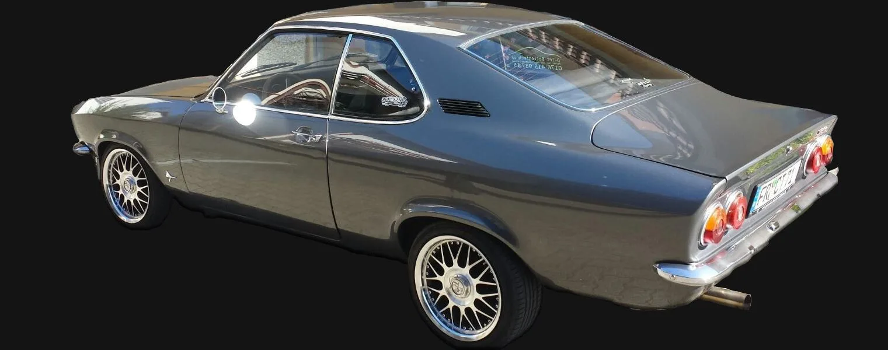
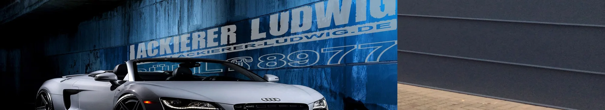
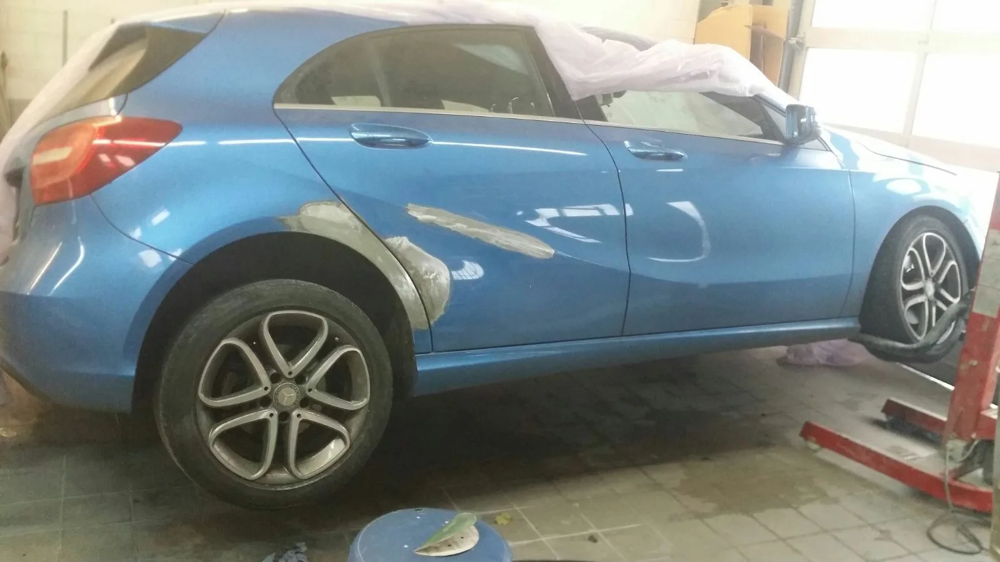
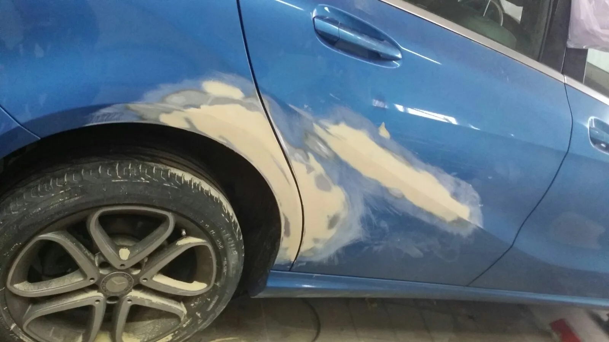
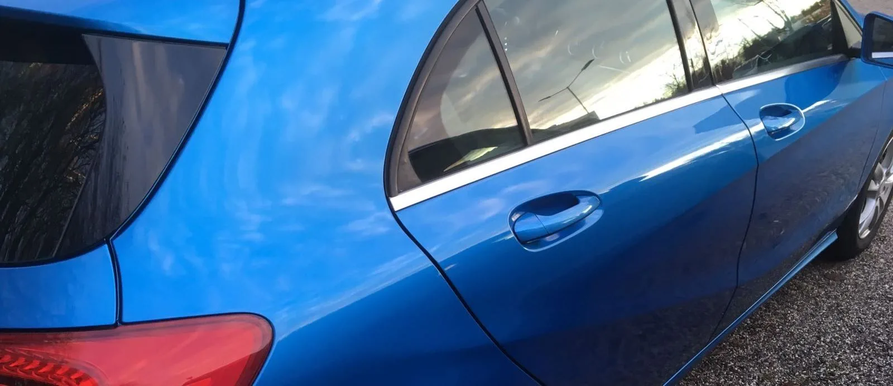
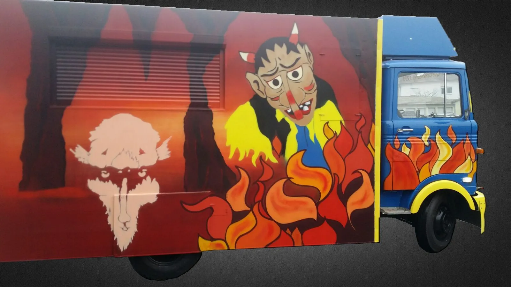
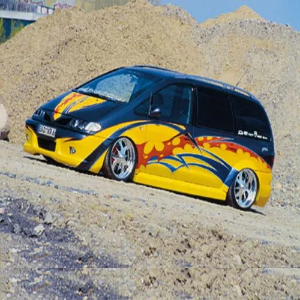
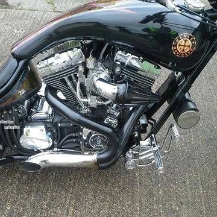
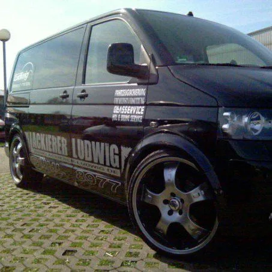

Unfallinstandsetzung
Mit Originalteilen, für nahezu jedes Fabrikat. Von Audi bis Zastava.
Lackierermeister in Bühl
Nur das Beste für Ihren Liebling. Vom Kratzer bis zum Unfallschaden, vom Motorrad bis zum Oldtimer.
5,0197 Bewertungen auf Google


Unfall? Ihr Pech, unser Glück.
Sie entscheiden, wo Ihr Auto repariert wird. Wir bestellen den Sachverständigen, organisieren den Ersatzwagen und regeln alles Weitere direkt mit der Versicherung.
Aus der Werkstatt



Leistungen
Mit Originalteilen, für nahezu jedes Fabrikat. Von Audi bis Zastava.
PKW, Motorrad, Fahrrad, Sportboot, Felgen. Jeder Farbton passgenau aus der eigenen Mischanlage.
Flip-Flop, Pearl, Chrom- oder Goldglanz, Chamäleon. Wir zeigen Ihnen Musterbeispiele.
Dellendrücken, auf Badisch „Delledrigge“. Spart das Lackieren und bares Geld.
Es muss nicht immer gleich Lackieren sein. Lässt sich ein Kratzer nicht auspolieren, zahlen Sie fürs Polieren nichts.
Neue Scheibe meist schon am nächsten Tag, Abrechnung mit der Versicherung inklusive.
Vom Kleinwagen bis zur Limousine. Ist ein Werkstattwagen frei, fahren Sie kostenlos.
In Erstausrüsterqualität bis zum nächsten Morgen, dazu gebrauchte Karosserieteile.
Hol- und Bringdienst
Im Umkreis von 20 Kilometern holen wir Ihren Wagen ab und bringen ihn nach der Reparatur direkt vor die Haustür. Auf Wunsch tauschen wir ihn vor Ort gegen einen Leihwagen. Ein Anruf genügt.
Unsere Arbeiten




Opel Manta A
Wie aus Schrott ein Erlkönig wurde. Vollrestaurierung, rund 100 Stunden Arbeit. Saubere Karosseriearbeit, damit das Ergebnis lange Freude macht.
Kontakt
Erreichbar
Montag bis Freitag
9:00 bis 16:00 Uhr
Schreiben
info@lackierer-ludwig.de
Fax 07223 250366
Inhaber
Horst Ludwig
Lackierermeister